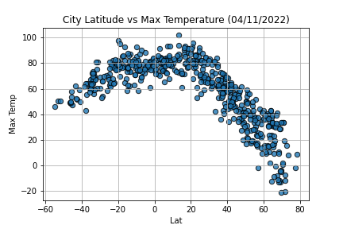
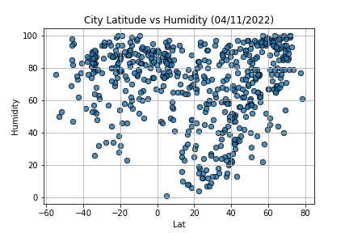

The WeatherPy program pulls realtime weather data (as of the date listed on the figures) from randomly generated cities across the board and analyzes it. The goal was to find trends between the latitude of the cities and the temperature, humidity, cloudiness and wind speed in those areas which were shown via multiple plots of the data. A dataframe was created from all this information and outputted to a CSV file.
The VacationPy program pulled the CSV file from the WeatherPy program into a dataframe and plotted each city and its humidity in Gmaps as a Heat Layer. The dataframe was then narrowed to conditions matching an ideal vacation spot and hotels were found for each of the cities in the new dataframe. These hotels were then displayed and the previously generated heat map.
 